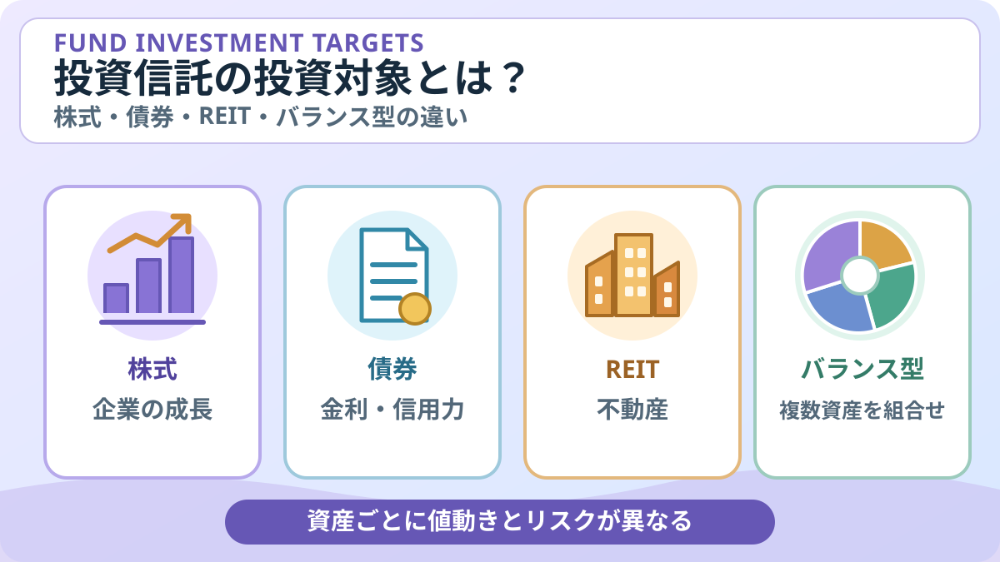

投資信託の投資対象とは？株式・債券・REIT・バランス型の違い
投資信託は、ひとつの商品でも投資先によって値動きやリスクが大きく異なります。商品名だけで判断せず、「どの資産に」「どの地域で」投資するのかを分けて見ると、商品の特徴をつかみやすくなります。

- 投資対象資産（株式・債券など）と、投資対象地域（国内・海外など）は別の分類です。
- 「バランス型」は複数資産を組み合わせる運用タイプで、必ずしも値下がりしない商品ではありません。
- 同じ「株式型」でも、国・地域、業種、銘柄数、為替ヘッジなどでリスクは変わります。
1. 投資信託の投資対象は大きく分けて何がある？
投資信託は、投資家から集めた資金を運用方針に沿って株式や債券などに投資する金融商品です。主な投資対象資産には、株式、債券、不動産投資信託（REIT）、コモディティなどがあり、複数の資産を組み合わせる商品もあります。
| 主なタイプ | 投資対象・収益の源泉 | 主な値動きの要因・注意点 |
|---|---|---|
| 株式型 | 企業が発行する株式 | 企業業績、景気、金利、市場心理など。株価が大きく下落することがあります。 |
| 債券型 | 国債・地方債・社債など | 金利、発行体の信用力、為替など。債券も価格変動し、元本が保証されるわけではありません。 |
| REIT型 | 不動産投資信託・不動産投資法人など | 不動産市況、賃料、金利、景気など。株式と同様に大きく値動きする場合があります。 |
| コモディティ型 | 金、原油、穀物などの商品価格に関連する資産・指数など | 需給、為替、地政学要因など。先物を使う商品では、先物価格と現物価格の差なども影響します。 |
| バランス型・資産複合型 | 株式・債券・REITなど複数資産 | 資産配分、各市場の値動き、リバランス方針など。複数資産でも損失を防げるとは限りません。 |
この表は一般的な特徴をまとめたものです。実際の投資対象や投資制限は商品によって異なり、コモディティなどは投資信託の制度上の分類で「その他資産」に含まれる場合もあります。
2. 株式型：企業の成長や株価の変動が影響
株式型の投資信託は、国内外の企業の株式を主な投資対象とします。企業の利益成長や配当などが投資収益の源泉になる一方、業績悪化や景気後退、市場全体の下落などによって基準価額が下がることがあります。
「全世界株式」「米国株式」「日本株式」など、対象地域や指数が違えば投資先も異なります。特定の国・業種・大型企業への集中度も確認しましょう。株式型というだけで、投資先が世界中に分散されているとは限りません。
3. 債券型：金利や発行体の信用力に注意
債券型は、国や企業などが資金調達のために発行する債券を主な投資対象とします。債券の利子や価格変動が収益に影響しますが、一般に金利が上昇すると既発債券の価格が下落しやすい関係があります。
また、発行体の信用状況が悪化すると債券価格が下がったり、利払いや元本償還が滞ったりするリスクがあります。海外債券では為替変動も重要です。「債券型＝元本保証」ではなく、債券の種類や残存期間、信用格付け、為替ヘッジの有無を確認してください。
4. REIT型：不動産の賃料や市場価格が影響
REIT（リート）は、多くの投資家から集めた資金などで不動産を保有・運用し、賃料収入や不動産売却益などを収益源とする仕組みです。REIT型投資信託は、国内のJ-REITや海外REITなどを投資対象とする場合があります。
不動産市況、空室率、賃料、借入金利、景気などが影響し、REITの価格も下落します。海外REITに投資する場合は為替変動にも注意が必要です。実物不動産に直接投資することとは仕組みが異なります。
5. コモディティ型：金・原油などの商品価格に関連
コモディティ型は、金や原油、農産物などの商品価格に連動することを目指す指数や、関連する資産・デリバティブなどを利用する商品です。株式・債券とは異なる要因で値動きすることがあり、ポートフォリオの分散を考える際に検討される場合があります。
ただし、価格は需給、景気、為替、地政学リスクなどで大きく変動します。先物を利用する場合は、現物価格の動きとファンドの値動きが一致しないこともあります。金などの商品価格が上がることや、株式と常に逆方向に動くことが保証されるわけではありません。
6. バランス型：複数資産を組み合わせる
バランス型は、株式・債券・REITなど複数の資産に投資する商品です。ひとつの資産だけに集中する場合と比べ、値動きの異なる資産を組み合わせることでリスク分散が期待できる場合があります。
確認したいのは、資産配分の割合、国内外の比率、配分を一定に保つのか市場環境などに応じて変えるのか、定期的なリバランスを行うのかという点です。株式比率が高い商品と債券比率が高い商品では値動きの特徴が異なります。複数資産に投資していても、市場全体が下落すれば損失が出る可能性があります。
7. 投資対象の「地域」も別に確認する
資産の種類とあわせて、どの地域の資産に投資するかも重要です。商品分類では、主な投資収益の源泉が国内にあるものを「国内」、海外にあるものを「海外」、国内と海外の両方にあるものを「内外」といった区分で整理します。
- 国内：日本の株式・債券・REITなどが中心。
- 海外：米国、欧州、新興国など海外の資産が中心。対象地域は商品ごとに異なります。
- 内外・グローバル：国内外に投資する商品。地域ごとの配分は商品によって異なります。
海外資産では為替変動が円換算の基準価額に影響します。為替ヘッジを行う商品もありますが、ヘッジにはコストがかかる場合があり、為替変動の影響を完全に取り除けるとは限りません。また、「全世界」や「グローバル」という名称でも、国・地域ごとの配分や対象指数は目論見書で確認しましょう。
8. 商品名だけでなく、目論見書のどこを見る？
投資対象を確かめるには、販売会社や運用会社の公式ページから最新の交付目論見書を開き、次の項目を確認します。
- 商品分類・属性区分：主な資産、投資対象地域、投資形態などを確認する。
- ファンドの目的・特色：どの資産・指数を対象に、どのような成果を目指すか読む。
- 投資方針・組入資産：投資可能な資産、地域、銘柄の範囲や投資制限を確認する。
- 為替ヘッジ：為替変動の影響を抑える方針かどうかを確認する。
- リスクと費用：価格変動要因、信託報酬、その他費用などもあわせて確認する。
商品分類は便利な入口ですが、分類名だけですべての投資先やリスクがわかるわけではありません。実際の投資先や配分を詳しく知りたい場合は、運用報告書や運用会社が公表する月報なども確認しましょう。資料の対象期間や作成日にも注意してください。
よくある質問
株式型と債券型は、どちらが安全ですか？
一概には言えません。値動きの要因が異なり、債券型にも金利・信用・為替リスクがあります。投資対象、期間、為替ヘッジ、信用力などを含めて商品ごとに確認しましょう。
バランス型なら損をしにくいですか？
複数資産への分散によってリスクが抑えられる場合はありますが、損失を防ぐ保証はありません。資産配分や各資産の値動き、市場環境によって成果は変わります。
全世界株式ファンドなら、世界のすべての国に均等に投資しますか？
必ずしもそうではありません。対象指数や運用方針により、国・地域ごとの組入比率や対象銘柄が異なります。最新の目論見書や指数の説明資料を確認してください。
投資対象が同じなら、商品も同じですか？
同じ資産・地域を対象としていても、連動を目指す指数、運用方法、銘柄の組み入れ方、為替ヘッジ、費用などが異なる場合があります。投資対象だけでなく、運用方針とコストも比較しましょう。
公式情報・参考資料
- 資産運用業協会：運用対象での分類 — 商品分類、投資対象地域・資産の区分
- 資産運用業協会：投資信託とは — 投資信託の仕組みと元本保証ではないこと
- J-FLEC：投資信託の選び方のポイントは？ — 投資対象や運用方法を確認する考え方
- J-FLEC：投資信託にはどんな種類がありますか？ — 投資信託の種類と特徴
- 金融庁：資産形成の基本 — 金融商品の特徴とリスク
まとめ
投資信託を理解するには、株式・債券・REIT・コモディティなどの「投資対象資産」と、国内・海外などの「投資対象地域」を分けて確認することが大切です。バランス型は複数資産を組み合わせる選択肢ですが、損失を防ぐものではありません。商品名だけで判断せず、目論見書で投資方針・資産配分・リスク・費用を確認しましょう。